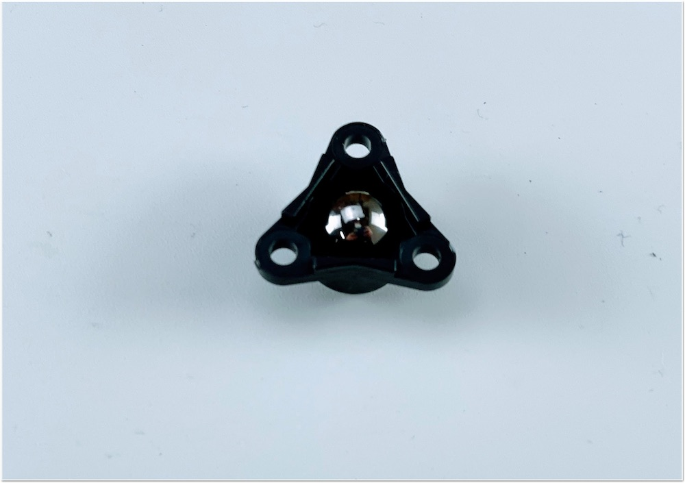
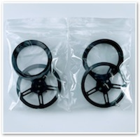
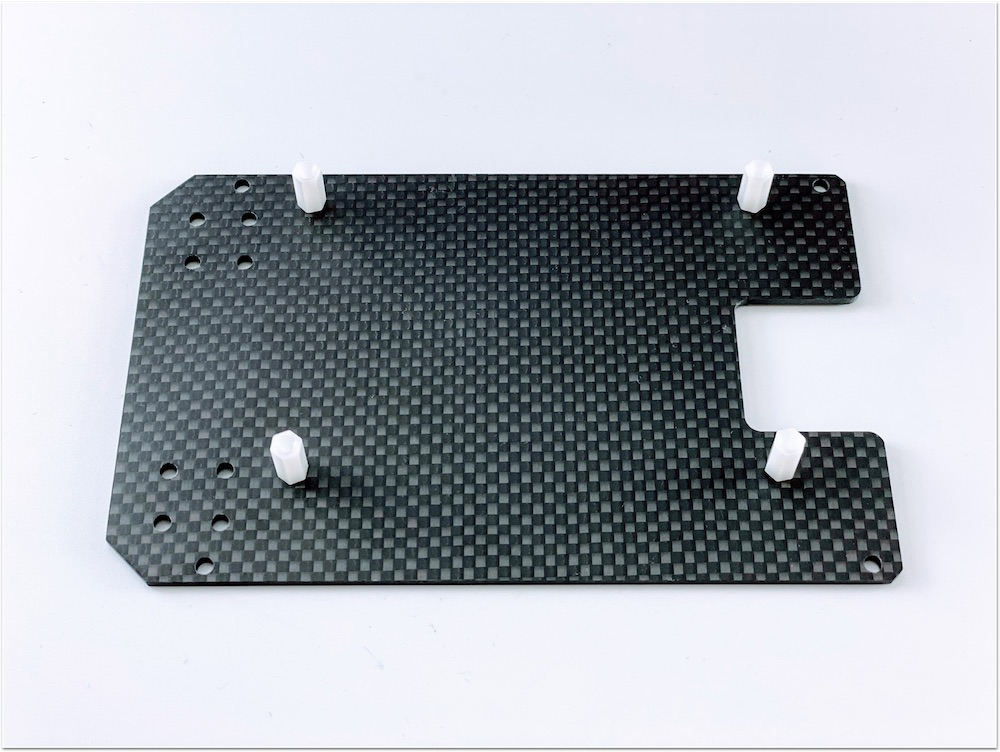
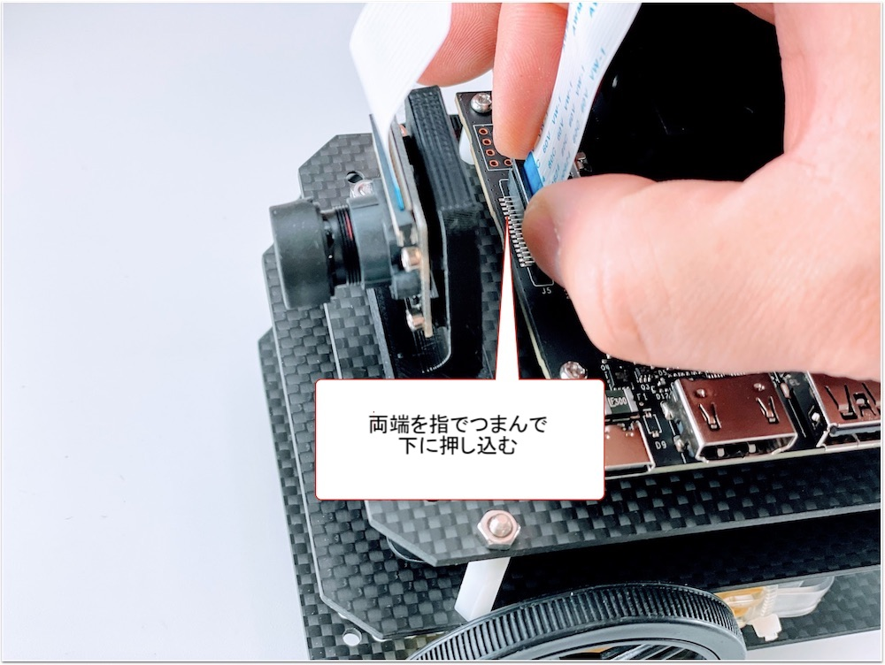
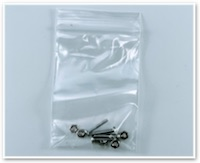
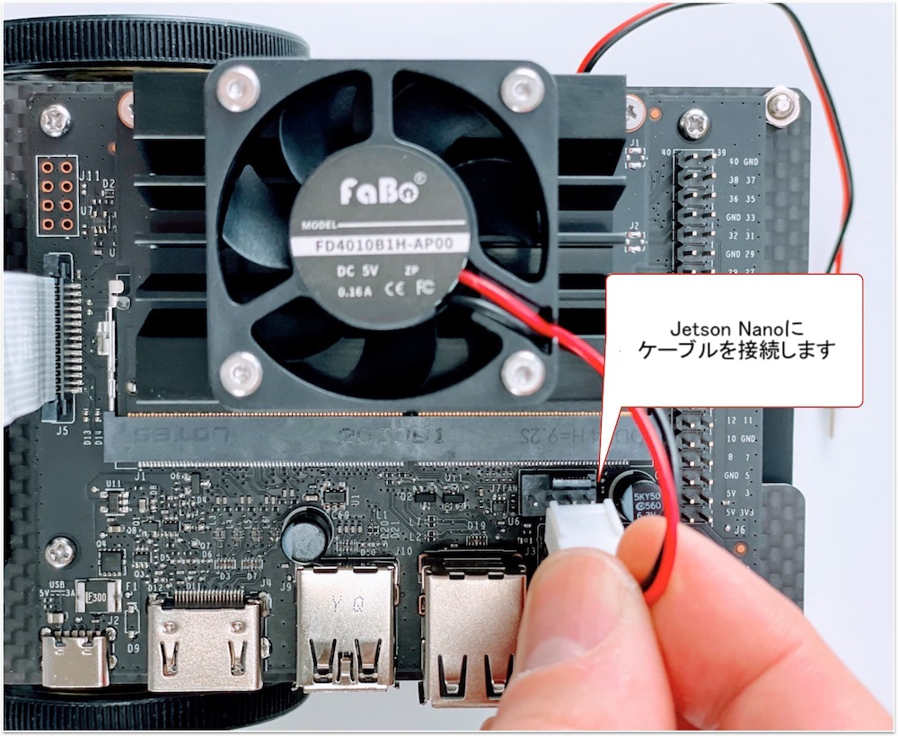
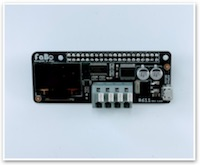
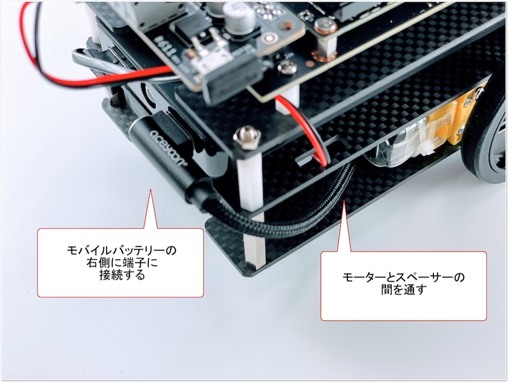
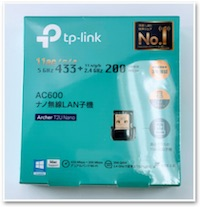

組み立てマニュアル(初期型)
対象モデル
| コード番号 |
|---|
| JB-2GB-Carbon-S（初期型） |
| JB-2GB-Carbon-B（初期型ベアボーン） |
| JB-2GB-Carbon-S-WR（初期型） |
1. ギヤモーターの取り付け
| 写真 | 種類 | 個数 |
|---|---|---|
 |
1.ギヤモーター固定ネジ袋 | 1 |
 |
ギヤモーター | 2 |
ギヤモーターに固定金具を取り付けていきます。

固定金具を取り付けネジで固定します。


金具は内側にそれぞれ対になる向きに取り付けます。


カーボンプレートに、ギヤモーターを接続します。


2. カーボン連結ネジの取り付け
| 写真 | 種類 | 個数 |
|---|---|---|
 |
3.カーボン連結ネジ袋（下） | 1 |
カーボン連結用のスペーサーを接続します。


3. ボールキャスターの組み立て
| 写真 | 種類 | 個数 |
|---|---|---|
 |
ボールキャスター | 1 |
ボールキャスターの組み立てをおこないます。

まず、ボールを取り付けます。

3本の棒をボールのうえに配置します。

プラスチック部品を取り付けます。

長い方に取り付け、ネジで固定します。


4. ボールキャスターの取り付け
| 写真 | 種類 | 個数 |
|---|---|---|
 |
2.ボールキャスター固定ネジ袋 | 1 |
 |
ボールキャスター固定カーボン ※または、下のスペーサーになります。 |
4 |
 |
ボールキャスタースペーサー軽量タイプ | 1 |
 |
カーボン中段 | 1 |
ボールキャスターをカーボンに取り付けます。

ボールキャスター固定カーボン4枚を重ねて取り付けます。または、ボールキャスターのスペーサを1個取り付けます。
※出荷時期により異なります。


5. カーボンの取り付け
| 写真 | 種類 | 個数 |
|---|---|---|
 |
4.カーボン固定ネジ袋(上) | 1 |
カーボン下段とカーボン中段を連結します。

モーターの線も穴から出しておきます。

白いスペーサーで、四隅を固定します。

6. タイヤの取り付け
| 写真 | 種類 | 個数 |
|---|---|---|
|  | タイヤ | 2 |
タイヤを装着します。


7. モバイルバッテリーの取り付け
| 写真 | 種類 | 個数 |
|---|---|---|
 |
両面テープ袋 | 1 |
 |
モバイルバッテリー | 1 |
モバイルバッテリーを両面テープで装着します。


8. カーボン上段の取り付け
| 写真 | 種類 | 個数 |
|---|---|---|
 |
6.Jetson固定ネジ袋 | 1 |
 |
カーボン上段 | 1 |
Jetson固定ネジを取り付けます。



9. カメラの取り付け
| 写真 | 種類 | 個数 |
|---|---|---|
 |
5.カメラ固定ネジ袋 | 1 |
 |
カメラ | 1 |
 |
カメラマウント | 1 |


10. 本体に結合


11. Jetsonの取り付け
| 写真 | 種類 | 個数 |
|---|---|---|
 |
Jetson | 1 |


12. カメラケーブルの取り付け



13. CPUファンの取り付け
| 写真 | 種類 | 個数 |
|---|---|---|
 |
CPUファンと取り付けジグ | 1セット |
|  | CPUファン取り付け用ネジ袋 | 1 |



14. コントローラーボードの取り付け
| 写真 | 種類 | 個数 |
|---|---|---|
|  | コントローラーボード | 1 |


15. USBケーブルの取り付け
| 写真 | 種類 | 個数 |
|---|---|---|
 |
USBケーブル | 1 |
 |
USB Type-C Cable | 1 |



16. Wi-Fiの取り付け
| 写真 | 種類 | 個数 |
|---|---|---|
|  | USB Wi-Fiドングル | 1 |
| USB Wi-Fiドングル ハイパワー（JB-2GB-Carbon-S-WRの場合） | 1 |

17. SDカードの差し込み